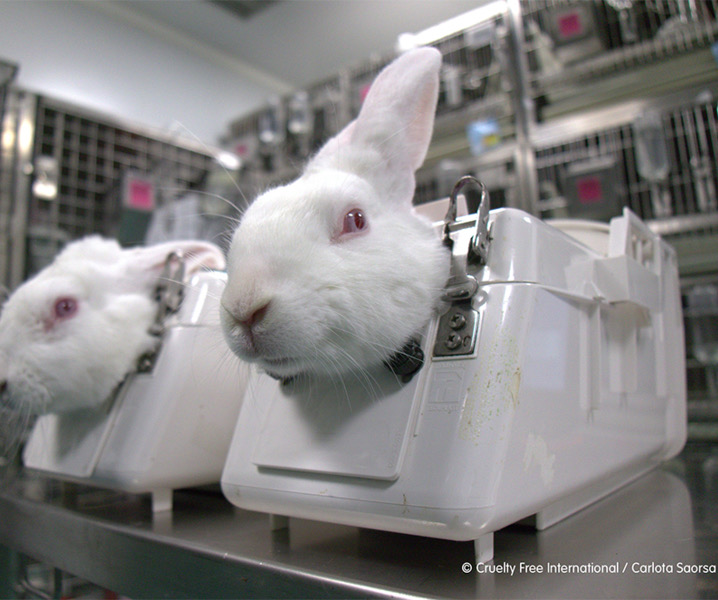
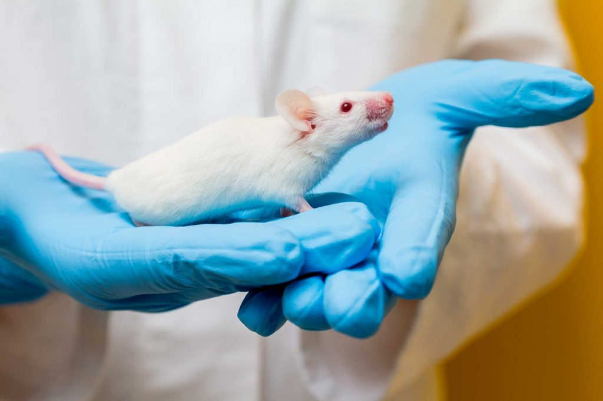
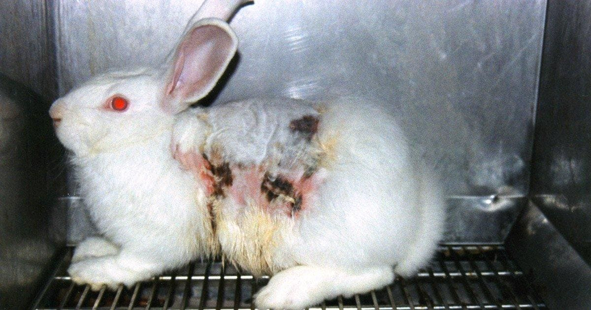

¿que es el animal testing?
La experimentación animal en la industria química consiste en usar animales para probar sustancias químicas y verificar si son peligrosas para los seres vivos o el medio ambiente. Se realizan pruebas para: Toxicidad (si una sustancia envenena) Irritación en piel y ojos Riesgo de cáncer Efectos en órganos Impacto en la reproducción o embarazo, Muchas veces se usan: Ratones Ratas Conejos Peces, Ejemplos de productos químicos evaluados: Pesticidas Limpiadores Pinturas Fertilizantes Productos industriales, Estas pruebas ayudan a crear normas de seguridad, pero también son muy criticadas por el sufrimiento animal. Por eso hoy existen alternativas como: Cultivos celulares Modelos computacionales Órganos artificiales en laboratorio Algunos países han limitado o prohibido ciertas pruebas, especialmente en cosméticos.
ejemplos de animales:



consecuencias:
